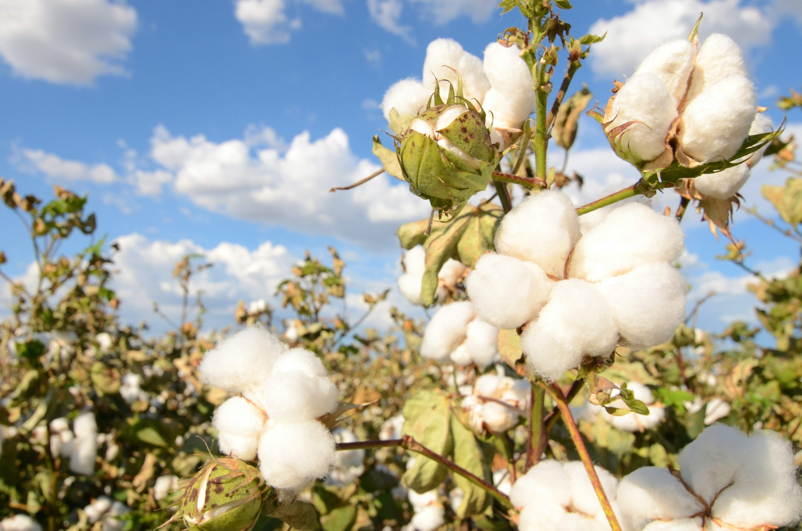
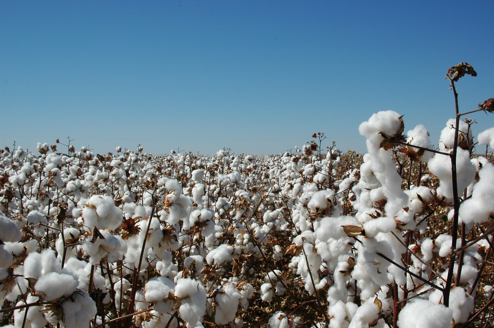

Two companies, one vision — premium cotton production and international trade from the heart of Tajikistan.
Our Companies
Zarrin and Saffir operate in synergy — one cultivates premium cotton, the other brings it to global markets.
A vertically integrated cotton production enterprise. From sowing and cultivation to ginning, spinning, weaving, and knitting — Saffir manages the complete value chain of cotton manufacturing.
The international trading arm connecting Tajikistan's finest cotton with global markets. Zarrin handles procurement, quality assurance, logistics, and distribution to clients worldwide.
Our Mission
For generations, cotton has been the white gold of Tajikistan. Our companies continue this proud heritage with modern agricultural practices, international quality standards, and a commitment to sustainable growth.
With operations spanning over 20,000 hectares across two key districts, we are building a fully integrated cotton ecosystem — from seed to fiber, from field to factory.
Value Chain
Cotton cultivation on our extensive fields in the subtropical climate of southern Tajikistan. Careful soil preparation and seed selection for optimal yield.
Separation of cotton fiber from seeds using modern ginning facilities. Quality control at every stage ensures premium grade output.
State-of-the-art spinning factories transform raw cotton fiber into high-quality yarn, ready for textile manufacturing.
The final stage — transforming yarn into finished fabrics through advanced weaving and knitting production lines.
Quality Standards
Both Zarrin and Saffir hold prestigious international certifications, affirming our commitment to sustainable and ethical cotton production.
Our Regions
LLC SGF Saffir — 54 km from capital
Trade Company Zarrin — 150 km from capital
Gallery


Contact
Whether you're a textile manufacturer, a trading partner, or an investor — we'd love to hear from you.
Dushanbe, Republic of Tajikistan
+992 XX XXX XX XX
info@saffir.tj
www.saffir.tj